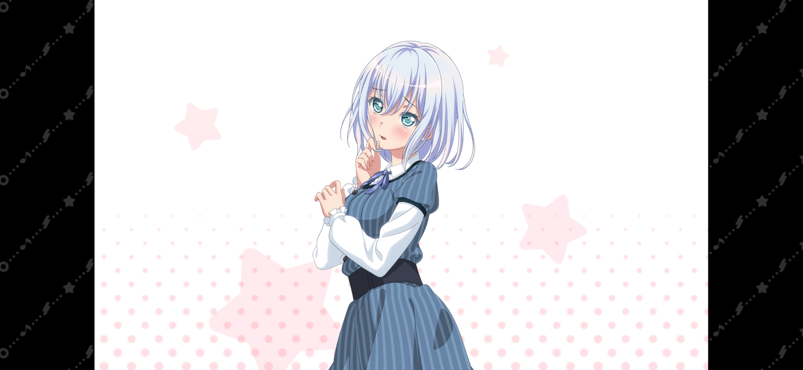
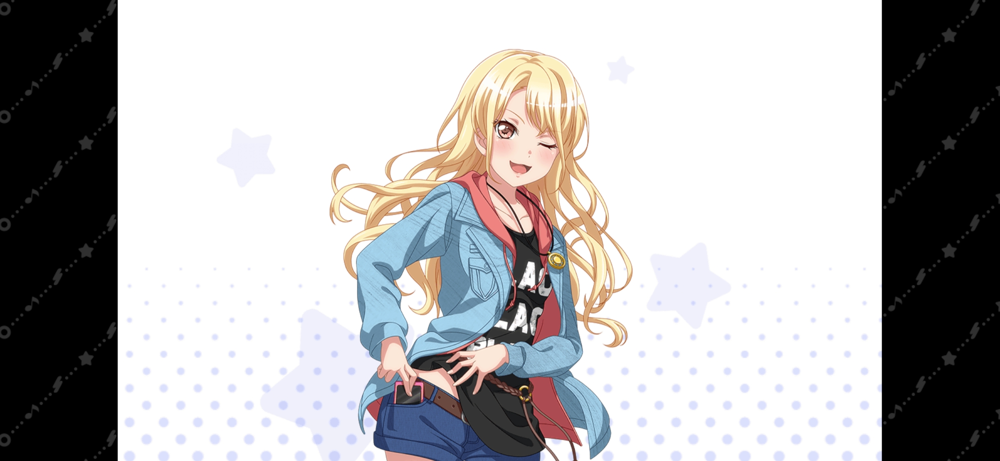
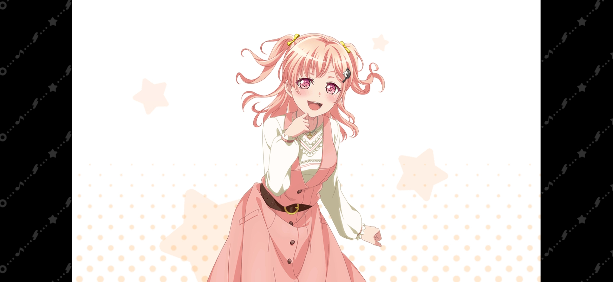
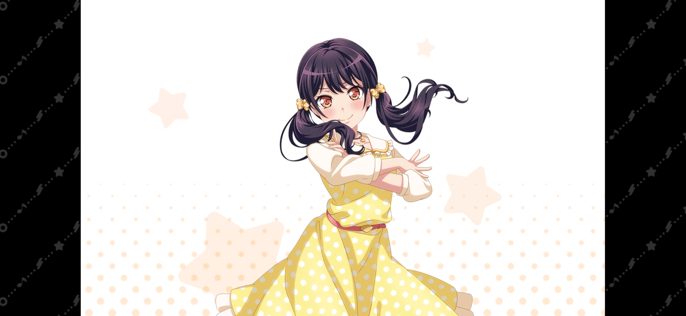
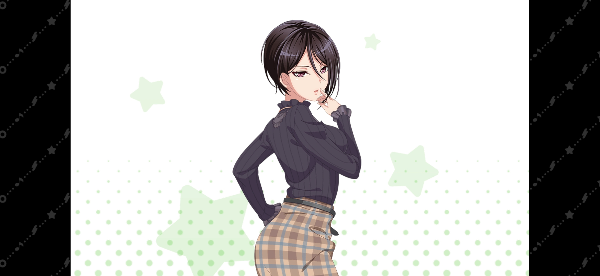

| 圖片 | 姓名 | 擔當 | 聲優 | 生日 | 身高 | 簡介 |
|---|---|---|---|---|---|---|
|  | 倉田真白 | 主唱 | 進藤天音 | 2月19日 | 154cm | 文靜又穩重的女孩。 雖然讀進了憧憬的貴族學校——月之森女子學院，但發現周圍的學生個個才華橫溢而備受打擊。 一直過著消沉的生活，直到遇上樂隊的那天。 由於性格比較陰暗，在日本有くらたま的外號（全名的前四個假名，漢字可以寫作「暗玉」也就是「黑球」）。 有些認生，經常會感到緊張，同時因為緊張會經常腹痛。 |
|  | 桐谷透子 | 吉他手 | 直田姬奈 | 12月16日 | 164cm | 無論是在學校還是在社交網絡上都是備受追捧的萬人迷。 和上原緋瑪麗、今井莉莎並稱邦邦三辣妹。 雖然性格開朗直爽，但老是因為隨心所欲的做事方法讓周圍的人備受折磨氣人角色，說話時偶爾會加上「超」來強調語氣。 家裡開著祖傳下來的和服店，對設計服飾充滿自信且緊追潮流，能根據興趣做出自己喜歡的服裝品牌，但有時會對成員們推薦奇妙的套裝。 很容易說洩氣話。 |
|  | 廣町七深 | 貝斯手 | 西尾夕香 | 6月16日 | 157cm | 嚮往著普通但有些特別與眾不同的女孩子。 總是在意自己與他人會不會產生分歧，因此會為了融入周圍環境而隱藏包括才能在內的真實的自己。 個人追求是成為普通的JK，認為和大家在一起組樂隊很有普通的青春的感覺，所以加入了樂隊Morfonica，擔任貝斯手。 作為樂器初學者在普通地努力。 |
|  | 二葉筑紫 | 鼓手 | mika | 9月15日 | 150cm | 總是滿懷信心的班長，同時也是Morfonica的隊長。 一直都很認真，但有時也會因為腦子一熱幹些蠢事。 以成為堅定可靠的人為目標持續奮鬥。 曾在初中的時候打過太鼓。 很熱心，會主動給蔫掉的花澆水，看到好吃的點心也會想到買一點在練習的時候拿去當慰問品。 被人依靠，或者被誇可靠的時候會很高興。 |
|  | 八潮瑠唯 | 小提琴 | Ayasa | 11月19日 | 169cm | 立於年級成績頂尖的才女。 從初中開始就是學生會的成員，多才多藝。 升上高二後擔任學生會長。 性格冷淡，一本正經，心直口快，總是站在理性的角度考慮事情而無視了感性。 使用的樂器是Gliga定製的五絃電子小提琴。 |